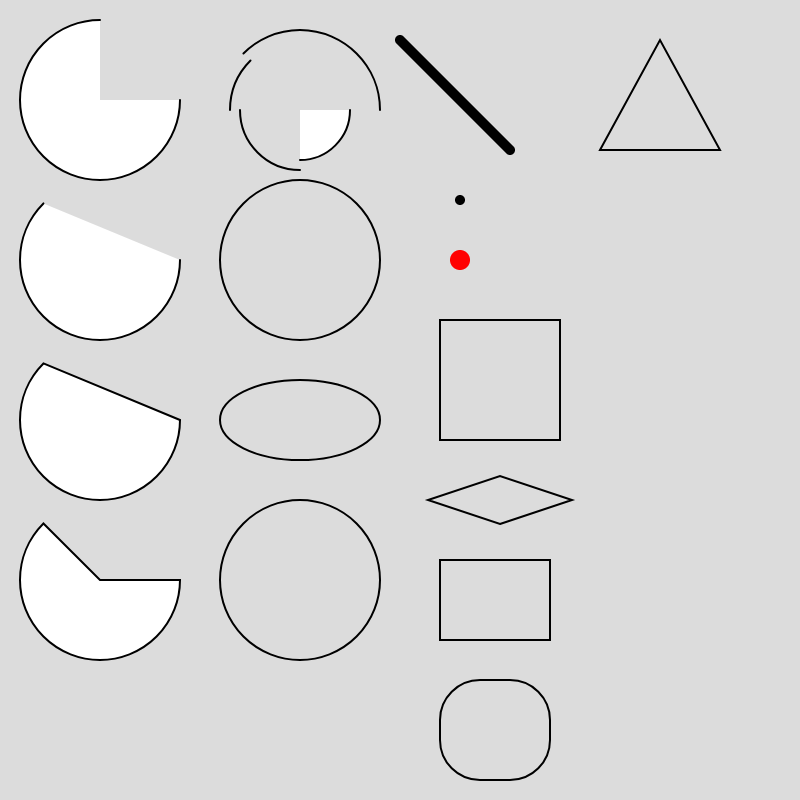
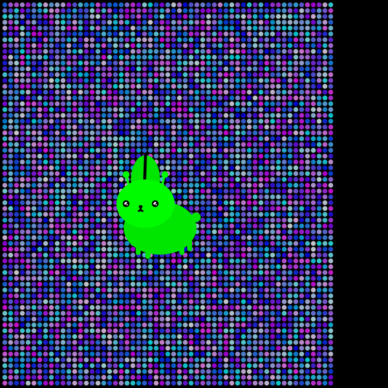

Intro to Comp Media
WEEK 1 -
function setup() {
createCanvas(400, 400);
noLoop();
}
function draw() {
background(220);
// arc(x, y, w, h, start, stop, [mode], [detail])
arc(50, 50, 80, 80, 0, PI + HALF_PI);
arc(50, 130, 80, 80, 0, PI + QUARTER_PI, OPEN);
arc(50, 210, 80, 80, 0, PI + QUARTER_PI, CHORD);
arc(50, 290, 80, 80, 0, PI + QUARTER_PI, PIE);
// Bottom-right.
arc(150, 55, 50, 50, 0, HALF_PI);
noFill();
// Bottom-left.
arc(150, 55, 60, 60, HALF_PI, PI);
// Top-left.
arc(150, 55, 70, 70, PI, PI + QUARTER_PI);
// Top-right.
arc(150, 55, 80, 80, PI + QUARTER_PI, TWO_PI);
ellipse(150, 130, 80);
ellipse(150, 210, 80, 40);
// circle(x, y, d)
circle(150, 290, 80);
strokeWeight(5);
line(200, 20, 255, 75);
// point(x, y, [z])
point(230, 100);
stroke('red');
strokeWeight(10);
point(230, 130);
stroke('black');
strokeWeight(1);
// quad(x1, y1, x2, y2, x3, y3, x4, y4, [detailX], [detailY])
quad(220, 160, 280, 160, 280, 220, 220, 220);
quad(250, 262, 286, 250, 250, 238, 214, 250);
// rect(x, y, w, [h], [tl], [tr], [br], [bl])
rect(220, 280, 55, 40);
// Give all corners a radius of 20.
rect(220, 340, 55, 50, 20);
// triangle(x1, y1, x2, y2, x3, y3)
triangle(300, 75, 330, 20, 360, 75);
}

Computation and My Interests
I have previously worked on an interactive installation where I used front-end programming to
trigger different responses in the system and create interactions with the audience. Through
that experience, I realized that computation can be a useful way to design interactive artworks.
One thing I often struggled with in my previous projects was deciding how an interaction should be triggered. I might have an idea of what I wanted the audience to experience, but I wasn't always sure how to translate different inputs or parameters into behaviors in the system.
This semester, I hope to learn more about how to design these relationships through computation. I am especially interested in exploring how different parameters can affect a system and how changing them can create different forms of interaction. I hope this will help me think about interaction not only from a visual or conceptual perspective, but also through the logic behind the system.
One thing I often struggled with in my previous projects was deciding how an interaction should be triggered. I might have an idea of what I wanted the audience to experience, but I wasn't always sure how to translate different inputs or parameters into behaviors in the system.
This semester, I hope to learn more about how to design these relationships through computation. I am especially interested in exploring how different parameters can affect a system and how changing them can create different forms of interaction. I hope this will help me think about interaction not only from a visual or conceptual perspective, but also through the logic behind the system.
Sketching Process
While working on my first sketch, I ran into a problem that confused me. Sometimes the shapes I
drew appeared correctly, but other times they did not show up, even though the code seemed
correct when I checked it.
This made debugging difficult because the problem did not seem consistent. I tried changing some values and checking the loops and drawing commands to understand what was happening. I haven't completely figured out the reason yet, but the process made me realize that even a simple sketch can behave unexpectedly, and that debugging is also part of learning how computation works.
So far, using the web editor has been convenient because I can quickly change the code and immediately see the result. At the same time, when something does not work as expected, I am still learning how to identify whether the problem comes from my code, the way I structured the loop, or something else in the editor.
This made debugging difficult because the problem did not seem consistent. I tried changing some values and checking the loops and drawing commands to understand what was happening. I haven't completely figured out the reason yet, but the process made me realize that even a simple sketch can behave unexpectedly, and that debugging is also part of learning how computation works.
So far, using the web editor has been convenient because I can quickly change the code and immediately see the result. At the same time, when something does not work as expected, I am still learning how to identify whether the problem comes from my code, the way I structured the loop, or something else in the editor.

function setup() {
createCanvas(400, 400);
noLoop();
}
function draw() {
background(0);
for(let i=5;i<400;i+=6){
for(let j=5;j<400;j+=6){
strokeWeight(0);
let r = random(200);
let g = random(200);
let b=200;
fill(r, g, b);
circle(i,j,5);
}
}
// body
strokeWeight(0);
fill(0, 230, 0);
ellipse(165, 235, 75, 55);
// 1
rect(140, 253, 5, 10, 10);
// 2
rect(150, 257, 5, 10, 10);
// 3
rect(185, 253, 5, 10, 10);
// 4
rect(193, 247, 5, 12, 10);
circle(202,224,10);
ellipse(150, 185, 30, 50);
strokeWeight(3);
line(150, 160, 149, 190);
// face
fill(0, 250, 0);
strokeWeight(0);
ellipse(150, 210, 60, 50);
circle(130,180,7);
circle(170,180,7);
strokeWeight(2);
stroke(0,255,0);
line(130, 180, 135, 200);
line(170, 180, 165, 200);
fill(0, 0, 0);
strokeWeight(0);
circle(130,210,7);
circle(160,210,7);
// eyes
fill(250,250,250);
circle(129,210,2);
circle(130,209,2);
circle(131,211,1.5);
circle(159,210,2);
circle(160,209,2);
circle(161,211,1.5);
// mouth
fill(0, 0, 0);
ellipse(145, 213, 4, 3);
strokeWeight(2);
stroke(0,0,0);
noFill();
arc(143, 215, 4, 5, 0, HALF_PI);
arc(147, 215, 4, 5, HALF_PI, PI);
console.log(width, height);
}